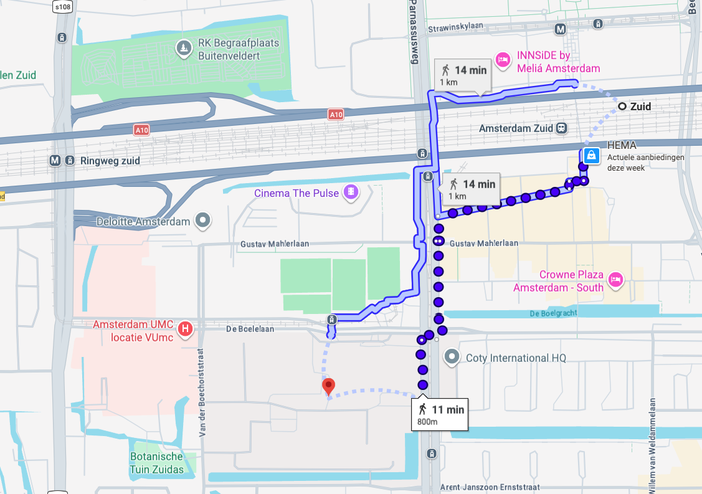
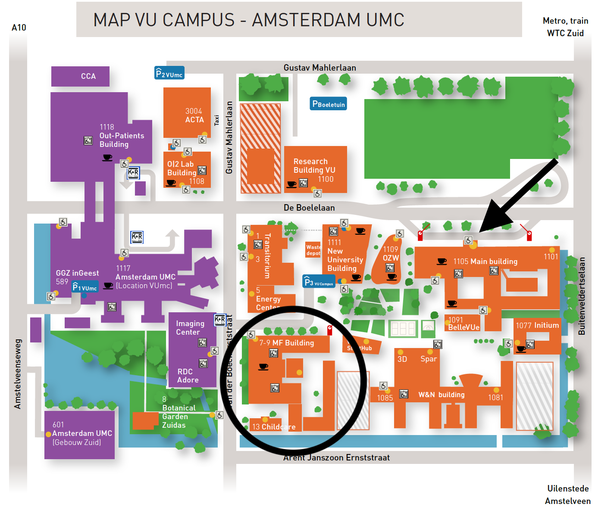

Global Wordnet Conference 2027
Vrije Universiteit Amsterdam, Amsterdam (The Netherlands), February 1-4, 2027
Welcome to the website of the Global WordNet Conference 2027!
The Global Wordnet Association and the Computational Linguistics and Text Mining Lab from the Vrije Universiteit (VU) Amsterdam is looking forward to welcome you in Amsterdam for the 14th Global Wordnet Conference, in February 2027!
All relevant information about conference, its program and the venue will be shared on this website.
More information soon to come!
Call for Papers
14th International Global Wordnet Conference
Amsterdam, Netherlands
February 1-4, 2027
The Global Wordnet Association is delighted to announce the 14th International Global Wordnet Conference (GWC2027), to be held in Amsterdam (Netherlands) from 1 to 4 February, 2026. The GWC2027 conference will be held under the auspices of the Global WordNet Association, the Faculty of Social Sciences and Humanities of the Vrije Universiteit Amsterdam.
Important information about registration and participation for GWC2027 will be incrementally added to the conference website: https://cltl.github.io/GWC2027/
We invite submissions of original research contributions addressing, though not limited to, the topics listed below. This year’s special theme is language documentation: how can wordnets be used to support language documentation around the world. As such, we would like to especially invite submissions on this topic. We hope this will foster collaboration and cross-pollination between the both fields.
Conference Topics
Lexical semantics and meaning representation
- Critical analysis and applications of lexical and semantic relations
- Proposed new relations
- Definitions, semantic components, co-occurrence and frequency statistics
- Word, sense, and context embeddings
- Necessity and completeness issues
- Ontology and wordnet
- Lexical semantics of emotions and other lexical fields of interest for lexical typology (e.g. body parts, colors, motion verbs, etc.)
- Wordnets and other modalities
- Wordnets and other theoretical frameworks for modelling lexical semantics
- Other lexicographical and lexicological questions pertaining to wordnet-style meaning representation
Architecture of lexical databases
- Language independent and language dependent components
- Integration of multi-wordnets in research infrastructures (e.g., CLARIN, ELG, ELRA, etc.)
- Wordnets and Linked Open Data (LOD)
Tools and methods for wordnet development
- User and data entry interfaces
- Methods for constructing, extending, and enriching wordnets
- Methods for linking wordnets to other lexical and semantic resources
- Methods for leveraging existing wordnets and semantic networks with large language models
- Methods for wordnet development specific for under-resourced languages
Applications of wordnet
- Word sense disambiguation
- Text generation
- Commonsense reasoning
- Machine translation
- Information extraction and retrieval
- Document structuring and categorization
- Text classification
- Automatic hyperlinking
- Language teaching
- Psycholinguistic applications
- Embeddings and pretrained language models
- Probing large language models
Standardization, distribution and availability of wordnets and wordnet tools
- Best practices for wordnet maintenance, standardization, and distribution
- Evaluation metrics for wordnet tools and resources
- Interoperability across wordnets and wordnet tools
- Licensing and legal considerations for wordnets distribution
- APIs and other web services for accessing wordnets
- Strategies for community involvement in wordnet standardization
Language documentation and wordnets
- Building wordnets for endangered, indigenous, and minority languages
- Representing culture-specific concepts, folk taxonomies, and indigenous knowledge systems through wordnets
- Integration of wordnet development with linguistic fieldwork tools (e.g., FLEx, ELAN, SayMore)
- Multimodal wordnets: Linking synsets to audio, video, and archival field recordings
- Wordnets as resources for language revitalization and community-based teaching
- Community-driven wordnet creation and participatory lexicography
- Overcoming data scarcity in wordnet construction for documented languages
- Ethical considerations, data sovereignty, and open access in endangered language wordnets
Submissions should fall into one of the following categories (page limits exclude references):
- Long papers: 8 pages max, 30 minute presentation
- Short papers: 5 pages max, 15 minute presentation
- Project reports: 5 pages max, 10 minute presentation
- Demonstrations: 5 pages max, with up to 3 additional pages for screenshots or images, 20 minute presentation
Submissions must be anonymized, and any identifying information must be removed. Authors should indicate their preferred submission category; however, the final category of acceptance may be adjusted by the organising and scientific committees (e.g., if need be, a long paper submission may be accepted as a short paper). At least one author from each paper must register and present the paper in person in order for the paper to be included in the proceedings.
To enhance replicability and transparency, authors are encouraged to share the data and code used in their research, whenever possible in an anonymized form. We recommend exploring data repositories that support anonymization techniques and open-source code hosting platforms like GitHub.
Camera-ready and final papers must be submitted electronically in PDF format only.
Paper submissions must adhere to the official ACL style templates available here for LaTeX and Word. Please also follow the general paper formatting guidelines established by the “*ACL” conferences available here. Authors should not modify these style-sheet files or use templates designed for other conferences.
Papers must be submitted via the EasyChair website:
https://easychair.org/conferences/?conf=gwc2027
Important Dates
- Paper Submission Deadline: October 16, 2026
- Notification of Acceptance: November 27, 2026
- Camera-Ready Submission Deadline: January 15, 2027
- Conference Dates: February 1-4, 2027
- Final Paper Submission for Proceedings: February 28, 2027
⏰ The deadline timezone is Anywhere on Earth
Important Dates
- Paper Submission Deadline: October 16, 2026
- Notification of Acceptance: November 27, 2026
- Camera-Ready Submission Deadline: January 15, 2027
- Conference Dates: February 1-4, 2027
- Final Paper Submission for Proceedings: February 28, 2027
Registration
Details regarding early-bird pricing, student discounts, and registration portals are on the way.
Program
The full schedule, including breaks and sessions, will be posted once finalized. The conference is planned for three and a half days, with a half-day excursion/social activity. The half-day excursion/social activity is planned for Wednesday afternoon.
| Time | Monday (Feb 1st) | Tuesday (Feb 2nd) | Wednesday (Feb 3rd) | Thursday (Feb 4th) |
|---|---|---|---|---|
| Morning | Morning Sessions | Morning Sessions | Morning Sessions | Morning Sessions |
| Afternoon | Afternoon Sessions | Afternoon Sessions | Excursion (Off-site activity) | Afternoon Sessions |
Keynote Speakers
Stay tuned to discover the invited global experts presenting at GWC2027.
Organization
Local Organizing Committee:
Piek Vossen, Luis Morgado da Costa, Pia Sommerauer, Isa Maks, Hennie van der VlietProgram Committee:
Details about the program committee will be posted once finalized.Venue
The conference will take place in the room MF-D146 Atrium, situated inside VU's Medical Faculty (MF) building.
Getting to Amsterdam's Station Zuid (South Station)
The VU Campus is adjacent to Amsterdam's Station Zuid (South Station), making it very accessible. It is near Schiphol airport, and it is also very easy to reach by train from other European cities. From within Amsterdam, Station Zuid (South Station) can be accessed by train, bus, tram and metro. The VU provides an official and detailed explanation of all available routes. Here is an overview:From Schiphol Airport to Station Zuid:
Station Zuid is one stop away from Schiphol Airport. Take a train in direction Utrecht, Hilversum or Amersfoort.
Note: Trains for Amsterdam Central Station will not stop at Amsterdam Zuid!
From Amsterdam Central Station to Station Zuid:
- Metro 52, also known as Noord/Zuidlijn, direction Station Zuid.
- Metro 51, direction Transformatorweg.
Other directions:
- Trams 5, 6, 24 and 25
- Buses 178, 221, 244, 341, 346, 347, 348, 358, 62
Getting to the Vrije Universiteit (VU) Amsterdam
From Station Zuid, the VU is a 10-minute/800m walk. If you have reduced mobility, other means of transportation (e.g., bus and tram) can take you closer to the VU. Buses 321, 178, 244 and 346 will take you from Station Zuid to the VU.

Finding the right building inside VU Amsterdam
The Medical Faculty (MF) building is situated in one of the corners of our beautiful campus. In the map below, VU's main entrance is marked with an arrow. The Medical Faculty (MF) building is marked with a circle. You do not need to enter the main building to make your way to the venue. Stroll through our campus courtyard to find your way to the MF building. You can download a full resolution of the VU Campus Map (PDF) here. This maps contains links to more information such as parking and facilities to disabled people.

We will soon provide further directions to find the room. However, even if we didn't do so, there is a host/hostess in the Central Hall of each building, who will be more than happy to help people find their way inside the building.
Accommodation
Recommended hotels, hostels, and accommodation advice close to the conference location.
Scholarships
More information about financial support application parameters for attending students and researchers from low-income countries will be made available here.
Contacts
Have questions? Reach out to one of the organizing team members through email.
Note: After you copy them, you will have to restitch the emails together.
Piek Vossen ( pi ek. vos sen@vu.nl)
Luis Morgado da Costa ( l.g. de.passos. mor gado.da.costa@vu.nl)
Pia Sommerauer ( pi a.s omme rauer@vu.nl)
Isa Maks ( is a. m aks@vu.nl)
Hennie van der Vliet ( h.d .vander .vl iet@vu.nl)